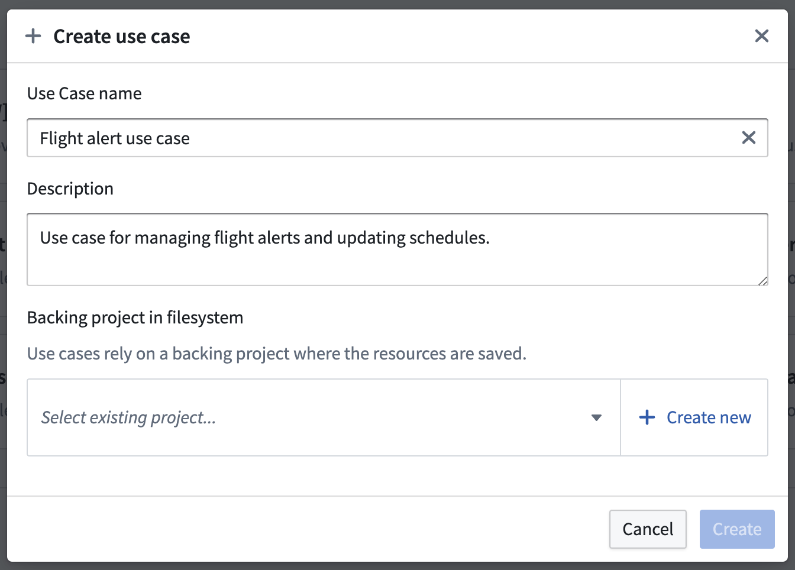
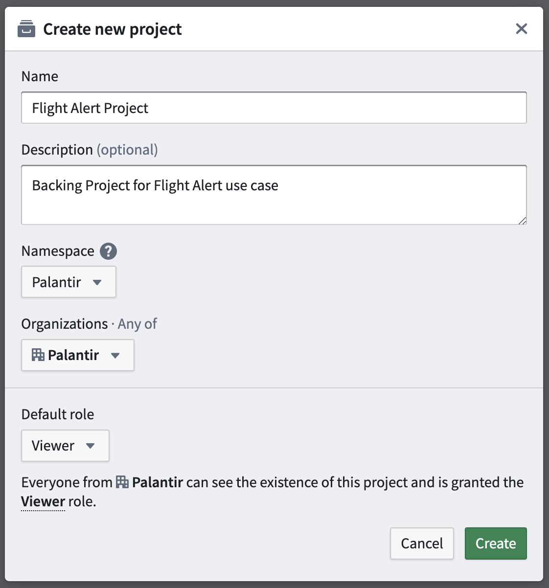
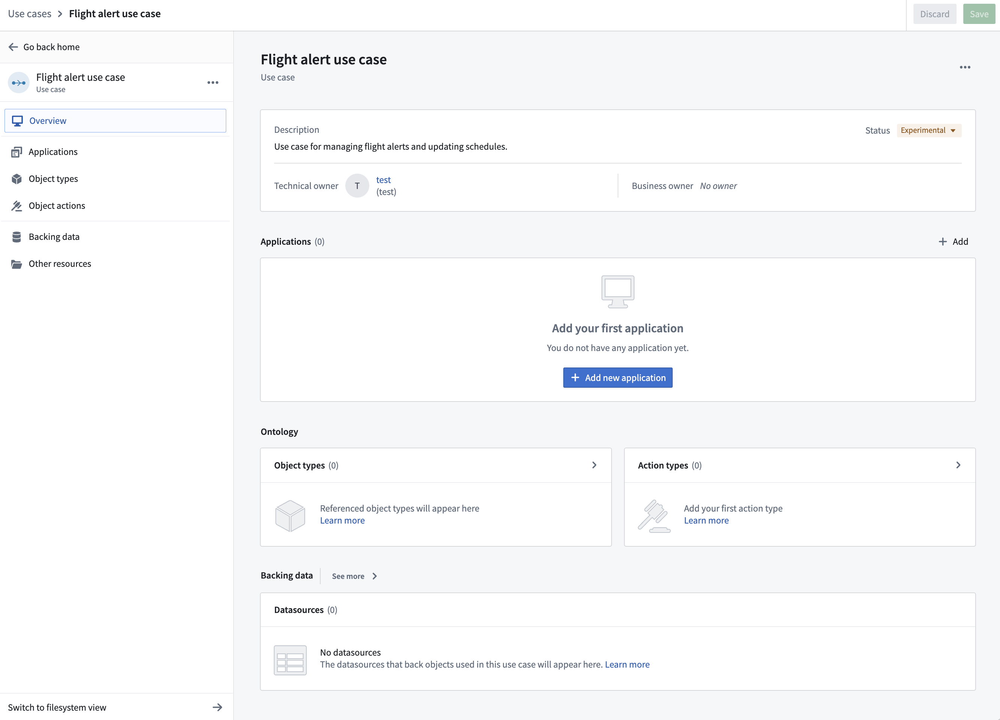

In this tutorial, we will use the Use Cases application to create a new use case with a variety of application and Ontology resources. We can then navigate to applications like Workshop and Ontology Manager directly from the use case overview page, as well as add additional applications.
First, we need to access the Use Cases application.
When logged into Foundry, access the Use Cases app from the left-side navigation bar under Platform Apps. If the application is not visible, select View all and find Use Cases under the Operational applications section of the Platform apps search window that appears.
You will now be on the home page of the Use Cases app. This page will be empty if you have not yet created a use case.
In the right side of the All use cases section, click + Create new. This will open the Create use case modal. Add the use case name and description. In our example, the use case name is âFlight alert use caseâ, and the description is âUse case for managing flight alerts and updating schedules."

In this tutorial, we will create a new backing Project in the filesystem. Click + Create new in the bottom right corner to open the Create new project modal that will allow you to add a new Project to your Foundry filesystem. Add a name, optional description, and space for your Project.
Your space will determine the default Organization and role for users in your Organization. In our example, our Project is named âFlight Alert Projectâ with the description âBacking Project for Flight Alert use caseâ. Our space is Palantir, our Organization is Palantir, and the default role is Viewer.

Select Create to create the new Project and return to the Create use case modal. Select Create again to create your use case and enter the use case overview page.
Learn more about Organizations, roles, and other platform security concepts.
After creating your use case and backing Project, you can modify the metadata that helps define your use case. This metadata includes the use case name, description, owners, and status.
At this point, your use case overview should look like this:

Note that you will be the technical owner of the use case by default. In our example, we are using a test user.
If you want to change the name of your use case, you can do so from the use case overview page. Click on the use case name at the top of the page and edit within the text field.
You can easily change the description of your use case by clicking on the description and editing within the text field.

There are two types of owners that you can assign to your use case: Technical and Business.
To change the owners of your use case, hover over the name or empty field and click on the pencil icon. This will open a search dropdown where you can scroll through or search for available users. As we do not yet have a business owner for our use case, we will assign one now.

We added user test2 to be the business owner of our use case.

You can assign your use case a status relevant to its operation status:
Change the status of your use case from Experimental to Active. Click on the status dropdown, choose Active, then click Change status.

Now that we have created a new use case with a backing Project, we can begin adding application resources. Start by creating a new Workshop module.
From your use case overview page, find the Applications section in the middle and click + Add new application. Choose the Workshop option, then click Create.

The new workshop module will be created and opened. From here, you can name the module and choose from various widgets to configure and use. Learn more about creating interactive modules in Workshop.
You can navigate back to the use case by clicking the top left header of the Workshop module name.